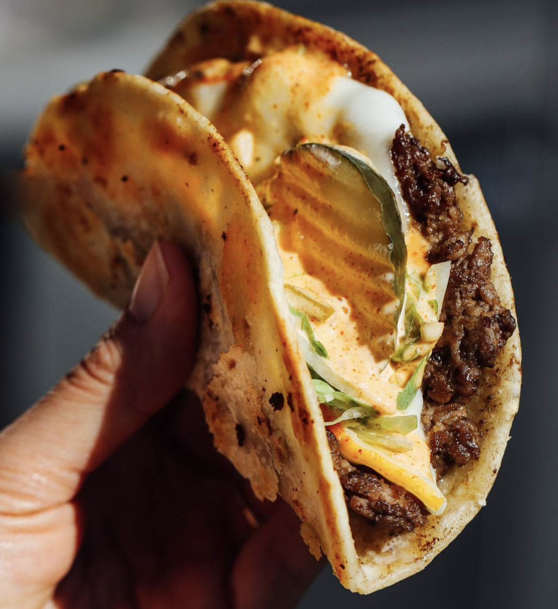

Smash Tacos Recipe

Description
Smash burger taco recipe by Amanda Paa
Ingredients
- Beef
- 1 pound ground beef, 80/20 fat percentage
- 1 teaspoon kosher salt
- 10 cracks fresh black pepper
- 6 (six-inch) flour tortillas
- 6 slices muenster or provolone cheese
- shredded lettuce, chopped white onion, and dill pickle chips for topping
- Sauce
- 1/2 cup mayonaise
- 1 teaspoon paprika
- 1/2 teaspoon onion powder
- 1/4 teaspoon garlic powder
- 1/2 teaspoon mustard
- 2 tablespoons minced bread & butter pickles
- 1 tablespoon pickle brine
- 10 cracks fresh black pepper
- 1/4 teaspoon Worcestershire sauce
Steps
- Add all burger sauce ingredients to a bowl and whisk to combine. Refrigerate until ready to use; can be made 3 days in advance.
- Divide and roll your beef into 2 1/2 ounce balls. You don’t want to be to rough with the meat or it will be tough. Less handling is better. Mix the salt and pepper into a bowl and roll each beef ball in it. Place each ball on a plate and put them in the fridge until your flat top is preheated.
- Turn your flat top onto high heat, ungreased. This is important to getting crispy, crispy, juicy beef.
- Place each ball on the hot flat top and set a 6 inch tortilla on top.
- Use your smashing tool to press down very firmly on top of each tortilla, smashing the meat until it is as thin as it goes. Let them cook for 1 minute, then press down on top of each tortilla again, which will get some of the fat out for the edges to cook in. Then let cook disturbed for 2 to 3 minutes. (The patties are so thin, this is definitely enough time for them to cook through.)
- Use a stiff steel spatula to scrape underneath one of the burgers and see if it is browned and crispy. (Be forceful; the beef might be sticking a little to the surface but that's okay). If it's not browned and crispy, increase the temperature of your grill (but it should be smoking hot.) Once browned and crisp, flip smash burger tacos onto their tortilla side and let cook another 2ish minutes so the tortilla can crisp up by cooking on the surface. Top with cheese, which will melt as the tortillas crisp.
- Remove and add burger sauce and toppings, then enjoy!
Back to Home page